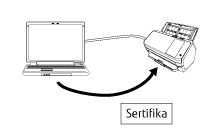

Genel Bakış
Network Setup Tool for fi Series, tarayıcıyı kullanılabilir duruma getirmek için bir fi Series görüntü tarayıcıyı bir ağa bağlamak için kullanılan bir uygulamadır.
Network Setup Tool for fi Series aşağıdaki araçlarla birlikte gelir.
Desteklenen tarayıcı modelleri, model için kullanılan araca göre değişir. Kullanmakta olduğunuz tarayıcınızın model adının, her araç tarafından desteklenen tarayıcı model adlarından biri olduğunu önceden kontrol edin. Her bir aracın desteklediği tarayıcı modelleriyle ilgili ayrıntılar için bkz Desteklenen Tarayıcı Modelleri.
Tarayıcı Seçme Aracı
Bu araç, bir bilgisayardan kullanmak üzere bir tarayıcı seçmek için kullanılır.
Bir ağa bağlanmış olan tarayıcılar arasından tek bir tarayıcı seçebilirsiniz.
fi-8950, fi-8930, fi-8820, fi-8040, fi-8190, fi-8290, fi-8170, fi-8270, fi-8150 veya fi-8250 modelini seçtiğinizde, aşağıdaki işlemleri de yapabilirsiniz.
Tarayıcı ayarlarını yapılandırmak için [Tarayıcı Seçme Aracı] penceresinden fi Series Ağ Ayarlarını başlatın (bir web tarayıcısında).
Tarayıcı ayarlarını yapılandırmak için bilgisayarınızdan Software Operation Panel programını başlatın
fi Series Ağ Ayarları (bir web tarayıcısında) ve Software Operation Panel ile ilgili ayrıntılar için tarayıcınızın İşletmen Kılavuzu'na bakın.

IP Adresi Ayarlama Aracı
Bu araç bir IP adresi, tarayıcı adı, güvenlikle ilgili bilgiler ve diğer ağ bilgilerini ayarlamak için kullanılır.
Sertifika Kayıt Aracı
Bu, tarayıcıyı sertifika gerektiren bir ağa Wi-Fi üzerinden bağlamak üzere bir tarayıcıya sertifika kaydetmek için kullanılan bir araçtır.
Tarayıcıya bir sertifika kaydettikten sonra, tarayıcının dokunmatik ekranında Wi-Fi ayarlarını yapılandırın.
Kaydedilebilir sertifikalar aşağıdaki gibidir:
İstemci sertifikası: PKCS#12 formatlı dosya (*.p12, *.pfx)
CA sertifikası: CA sertifika dosyası (*.cer, *.crt, *.der, *.pem)

Button Event Manager
Bu, bir tarayıcıdaki bir düğmeye basıldığında başlatılmasını istediğiniz bir görüntü tarama uygulamasını belirlemek için kullanılan bir araçtır.
Bir ağa bağlanmış bir tarayıcıyı bilgisayarda kullanabilmek için Tarayıcı Seçme Aracı'nı kullanmanız gerekir.